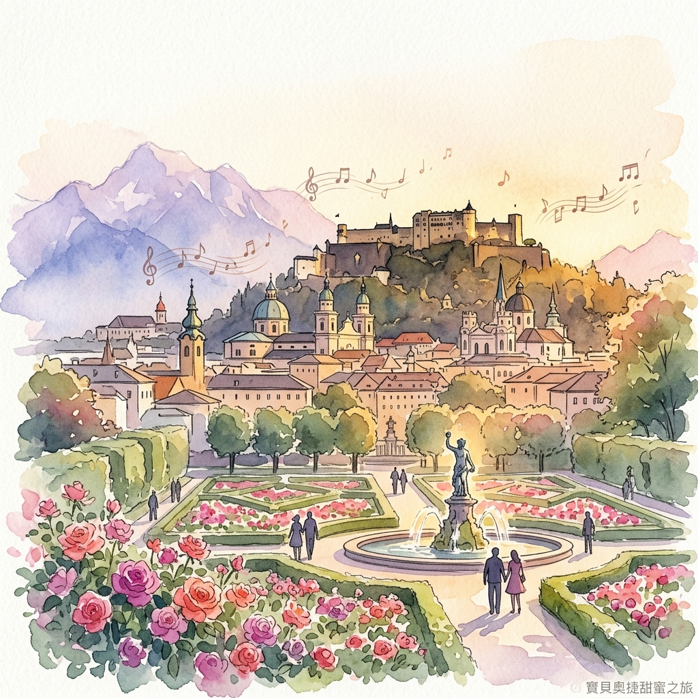
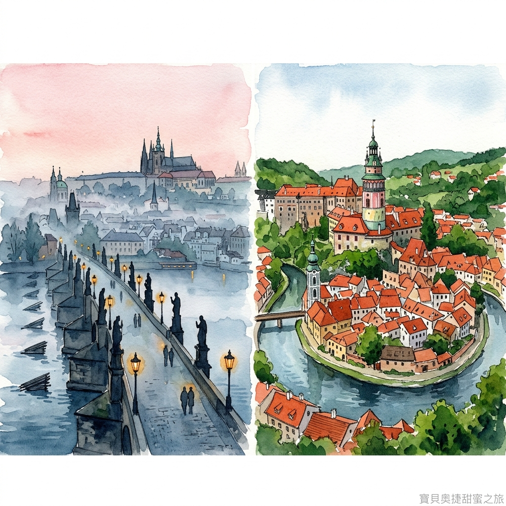
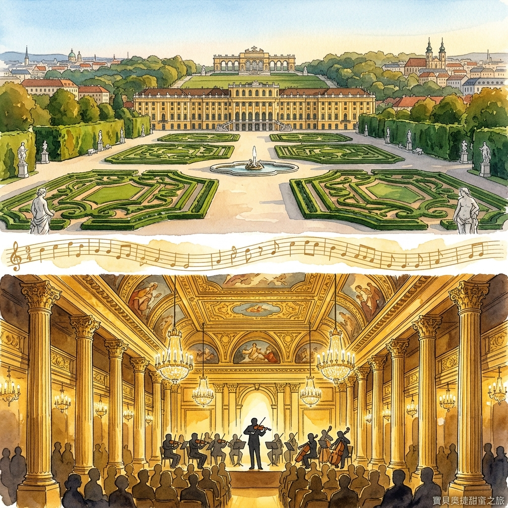

Salzburg · Český Krumlov · Prague · Vienna
去程： 7/15 (三) 23:45
TPE → VIE (07:15 +1)
回程： 7/27 (一) 12:30
VIE → TPE (06:30 +1)
逆時針環狀路線，不走回頭路：

米拉貝爾宮花園與要塞全景

清晨查理大橋 & 童話CK小鎮

熊布朗宮花園 & 金色大廳音樂會
抵達維也納機場後，搭乘ÖBB火車直達薩爾斯堡。漫步米拉貝爾宮花園與蓋特萊德巷，晚間於米拉貝爾宮欣賞莫札特音樂會。
搭乘巴士前往貝希特斯加登，轉乘至國王湖。搭乘電動船遊湖，享受Fischerstüberl煙燻鱒魚午餐，午後搭乘耶拿峰纜車俯瞰國王湖。
早晨參觀海爾布倫宮惡作劇噴泉，下午登薩爾斯堡要塞。傍晚搭乘CK Shuttle前往童話小鎮Český Krumlov。
欣賞CK城堡外觀與彩繪塔，漫步斗篷橋與城堡花園。下午搭乘RegioJet巴士前往布拉格，入住Hotel Golden Crown。
舊城區與猶太區巡禮、查理大橋、布拉格城堡與聖維特大教堂。安排卡爾斯特因城堡(Karlštejn)半日遊，並於萊特納公園欣賞最美夕陽。
搭乘RegioJet火車前往維也納。參觀聖史蒂芬大教堂，漫步格拉本大街，晚餐享用Plachutta百年清燉牛肉鍋。
使用Sisi Pass參觀熊布朗宮與霍夫堡。走訪納許市場、上美景宮欣賞克林姆《吻》真跡。最後一晚於金色大廳享受極致音樂饗宴。
整理行囊，搭乘Railjet直達維也納機場，辦理退稅手續後搭機返台，帶著滿滿的回憶結束奧捷之旅。